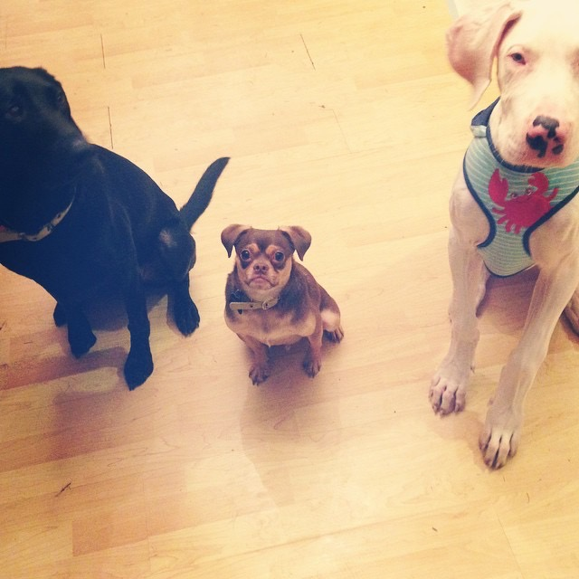

Let's start by saying that my adventure in this thing called life has been a roller coaster ride that I would not trade for anything.
I was born in Denver, Colorado in 1990 where I spent the first 3 months in the Intensive Care Unit at Saint Josephs Hospital. In the first 15 days that I was alive I had 3 major surgeries, stoma reconstruction, open heart surgery(co-arch repair), and the removal of the lower 80% of my intestinal colon tract and died once during these operations. I was given a 10% chance of survival through the night after my heart surgery because at the time the surgery that was performed was simply theoretical, it had never been performed and had no data to reflect against. After surviving all of the surgeries, my parents were told that I wouldn't make it past 10 without a full heart transplant.
I grew up being a huge fan of the Quebec Nordiques hockey team, around my 5th birthday in 1995 they relocated to Colorado and are now the Colorado Avalance. In 1997 my family moved to Springfield, Ohio where found that I also enjoyed college football. I have been a die-hard Ohio State Buckeyes since I was 8. 2001 I moved back to Denver where I found my love of the Marine Corps through my enrollment in my high school's MCJROTC program. I spent 2004-2008 anticipating the day that I could join the Marine Coprs and I was unfourtunately turned away even though I researched every loophole that would allow me to server. I recieved my GED in 2011 and have steadily traversed the job market starting in customer service, moving to physical labor and forklift operations, to landing a job as the Director of Safety and Compliance for a chemical manufacture in Lynnwood, WA.
The 2 thing that I have been the most blessed with in this life have been meeting and marrying my beautiful bride and recently celebrating my 30th birthday without any surgeries.
As a software developer I want to always push myself to be learning something new. My current role as Director of Safety and Compliance has allowed me to develop experience in OSHA Compliance, DOT Regulations, EPA standards. My background prior to this is in fabrication, freight/inventory control, shipping/receiving, and order fulfillment for internal production and/or customer service. I am fanatical about process, keeping everybody on the team well-informed, supporting budgets and meeting or beating project schedules. I take advantage of training, education and advancement opportunities that allow me to expand my knowledge, problem-solving and leadership capabilities.
Professional Experience:
Some interesting facts:
Education
Some of my favorite hobbies are: